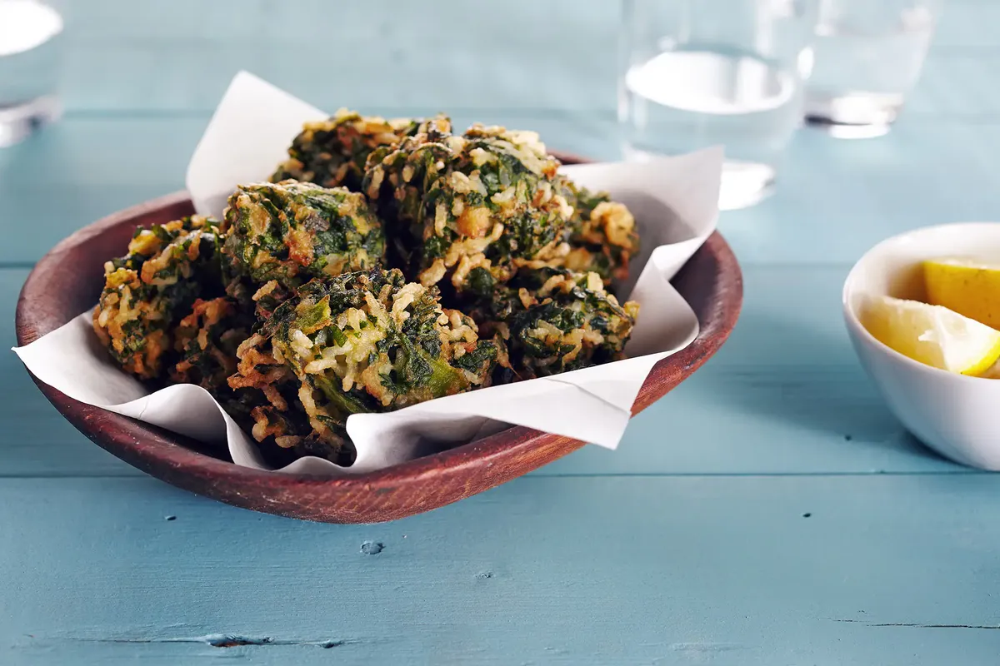

Los buñuelos de espinaca son una receta clásica y casera, crocantes por fuera y suaves por dentro. Son ideales para compartir como entrada o acompañamiento, y se destacan por su sabor simple y delicioso.
Rinde: 2 porciones
Tiempo de preparación: 45 minutos
Ingredientes
- 2 atados de espinaca
- 150/200grs de harina
- 2 huevos
- 1 cebolla
- 50 gramos de queso rayado
Paso a paso
- Paso 1 Cortar la espinaca bien chiquita (no hace falta hervirla antes)
- Paso 2 Saltear la cebolla.
- Paso 3 Mezclar con la espinaca.
- Paso 4 Agregar huevos y harina.
- Paso 5 Freír en aceite caliente.
- Paso 6 Servir calientes.